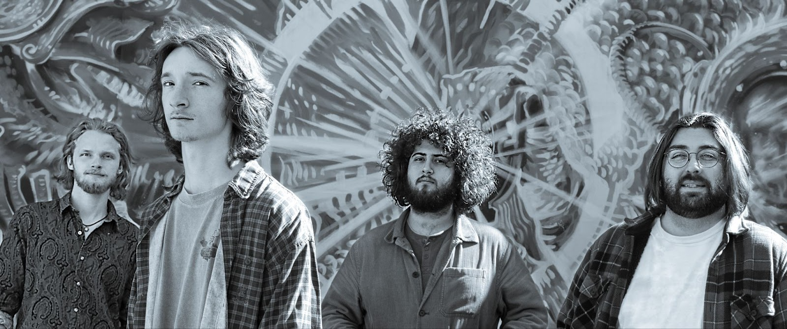
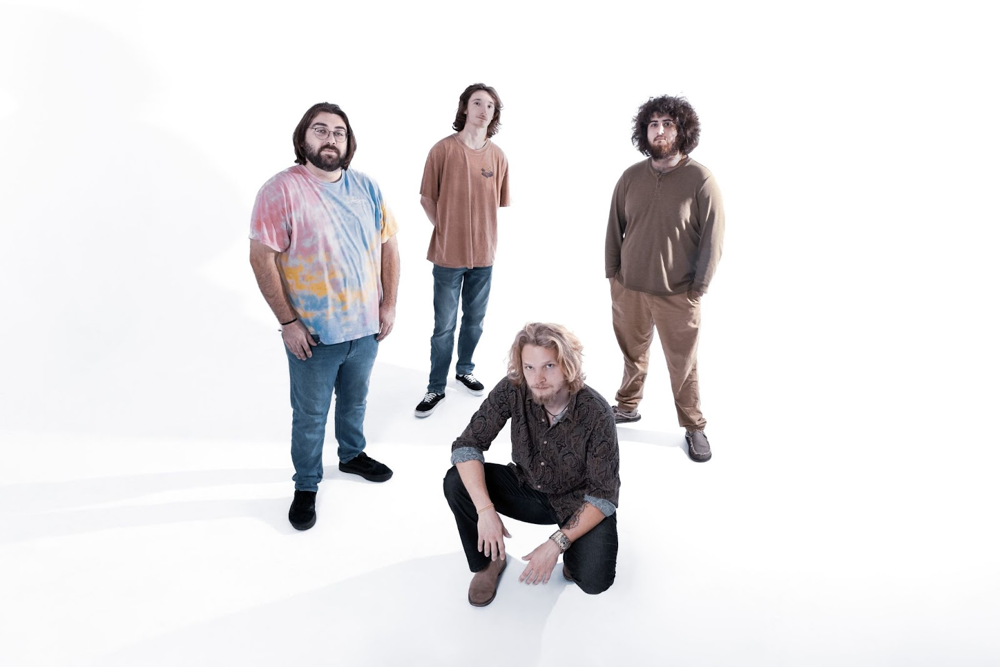
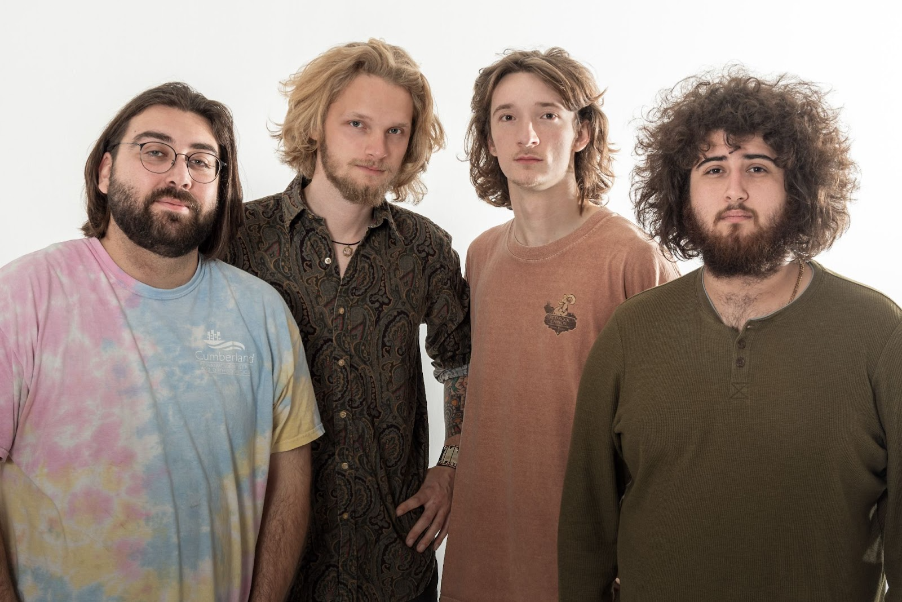

test test test test test test test test test


 Strictly Liquid, a rising rock and roll jamband from Florida, is captivating audiences with their original music that embodies the spirit of exploration. Drawing inspiration from iconic artists like Phish, Grateful Dead, The Allman Brothers, The Beatles, and Pink Floyd, their sound is a dynamic fusion of psychedelic rock, blues, jazz, funk, and a touch of Americana. From the touching melodies of “Halfway” to the cascading peaks of “Crow,” their music takes listeners on a journey through the broad spectrum of human emotion. Each performance is a unique experience, with the band forging a deep connection with their audience every time they take the stage.
Formed in 2021, Strictly Liquid began when brothers Luke Valcich (keys, vocals) and Jesse Valcich (guitar, vocals) crossed paths with Joey Remillard (bass, vocals) in Tallahassee, FL, bonding over their shared love of music and spirituality. They quickly became good friends and started the band. After a year of performing with six rotating drummers, JC Hannon (drums, vocals) joined as the final member, elevating the group’s chemistry both on and off the stage.
Joey and JC honed much of their musical craft at their local School of Rock, which exposed them to a wide array of artists across genres and decades. This formative experience gave them hundreds of hours of live performance and deepened their musical versatility. Joey further refined his skills under the mentorship of jam band legends Marc Brownstein and Oteil Burbridge. Together, Joey and JC seamlessly blend rhythm and groove, creating a foundation that anchors the band’s sound.
Luke and Jesse Valcich grew up in Orlando, FL, immersed in a family culture steeped in live music. From an early age, they played together in a family band, weaving music into their daily life and deepening their connection as brothers and musicians. After some time playing in an improvisational coffee-house duo, the two made an ambitious move from home to find and connect with contemporaries in the Tallahassee scene.
Strictly Liquid is an ever-evolving sonic experience, making waves throughout the Southeast, creating a vibrant, eclectic sound that honors the spirit of the psychedelic rock movement and the legacy of their jam band inspirations. With their festival debut at Resonate at Suwannee Music Park this May with other pivotal announcements coming around the corner, 2025 marks an exciting new phase in the band’s history.
Strictly Liquid, a rising rock and roll jamband from Florida, is captivating audiences with their original music that embodies the spirit of exploration. Drawing inspiration from iconic artists like Phish, Grateful Dead, The Allman Brothers, The Beatles, and Pink Floyd, their sound is a dynamic fusion of psychedelic rock, blues, jazz, funk, and a touch of Americana. From the touching melodies of “Halfway” to the cascading peaks of “Crow,” their music takes listeners on a journey through the broad spectrum of human emotion. Each performance is a unique experience, with the band forging a deep connection with their audience every time they take the stage.
Formed in 2021, Strictly Liquid began when brothers Luke Valcich (keys, vocals) and Jesse Valcich (guitar, vocals) crossed paths with Joey Remillard (bass, vocals) in Tallahassee, FL, bonding over their shared love of music and spirituality. They quickly became good friends and started the band. After a year of performing with six rotating drummers, JC Hannon (drums, vocals) joined as the final member, elevating the group’s chemistry both on and off the stage.
Joey and JC honed much of their musical craft at their local School of Rock, which exposed them to a wide array of artists across genres and decades. This formative experience gave them hundreds of hours of live performance and deepened their musical versatility. Joey further refined his skills under the mentorship of jam band legends Marc Brownstein and Oteil Burbridge. Together, Joey and JC seamlessly blend rhythm and groove, creating a foundation that anchors the band’s sound.
Luke and Jesse Valcich grew up in Orlando, FL, immersed in a family culture steeped in live music. From an early age, they played together in a family band, weaving music into their daily life and deepening their connection as brothers and musicians. After some time playing in an improvisational coffee-house duo, the two made an ambitious move from home to find and connect with contemporaries in the Tallahassee scene.
Strictly Liquid is an ever-evolving sonic experience, making waves throughout the Southeast, creating a vibrant, eclectic sound that honors the spirit of the psychedelic rock movement and the legacy of their jam band inspirations. With their festival debut at Resonate at Suwannee Music Park this May with other pivotal announcements coming around the corner, 2025 marks an exciting new phase in the band’s history.
© Strictly Liquid 2025